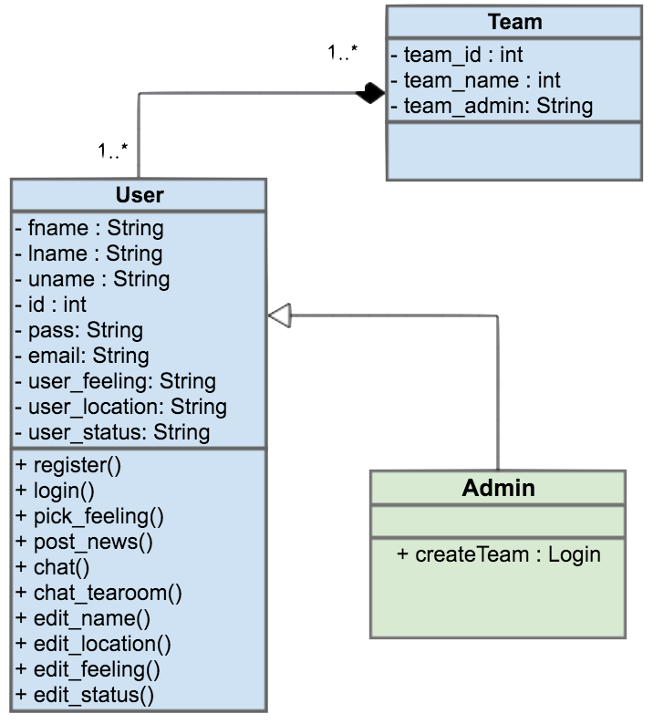

This is the overall architecture of the application showing a UML Diagram, Website Architecture and a Flow Diagram.
Our UML Diagram is showing how the team architecture is built within the database. Each team has specific attributes shown in the picture. Then each team can have one or more users, which involves a set of attributes such as name, status etc. and methods the user can do in the app. The user must also be in at least one team, so it's a many to many relationship. The user can also be an Administrator and will have the extra method, which is to create a team.

The Website Architecture shows a diagram specifying fron-end elements and back-end elements. You can see from the chart diagram that all the interactions that the user does with the app is under the catogery of front-end, and other actions such as getting data and updating data from the database is happening in the back-end. You can easily see the relationship between the front-end and the back-end where many of the front-end actions need the back-end to operate.
The Flowchart shows the flow from the user all the way to the databse in the application. Our users can use both the mobile application as well as displaying the app in a browser since the mobile app is built on web technologies. Therefore it's displayed like this.
If the user is the web application it will be run in a browser, reads all documents and then connects to the server. The server then gets/posts to and from the MySQL database.
If the user is using a mobile platform to display the app, it has automatically gone through the process of converting the mobile application with Cordova into the language the platform needs, e.g. iOS needs Objective C files and Android needs Java files. It then connects to the server, like the mobile app, and talks directly to the database.